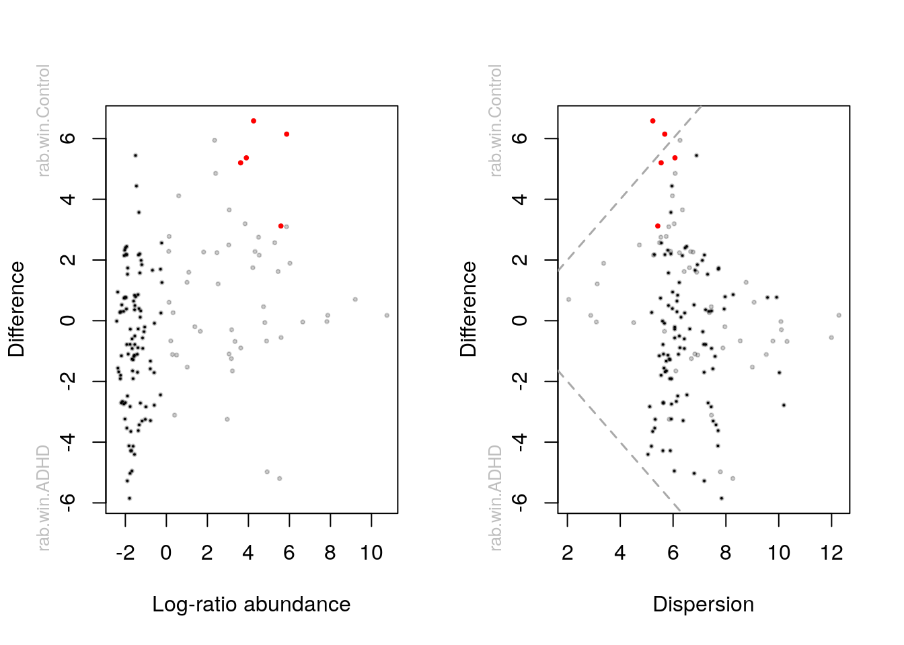
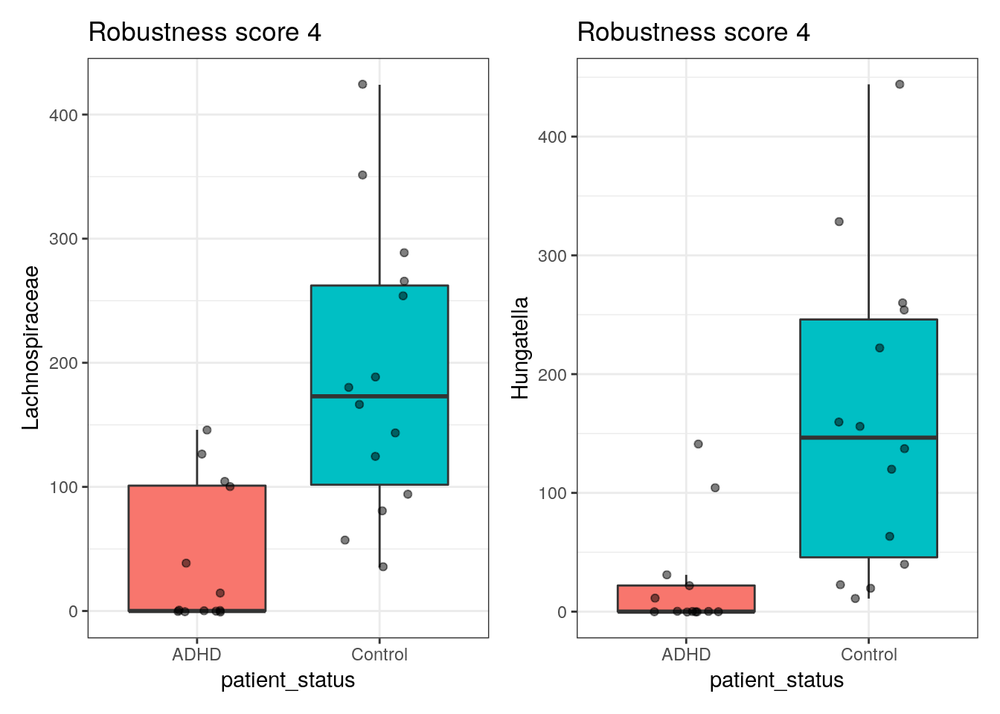
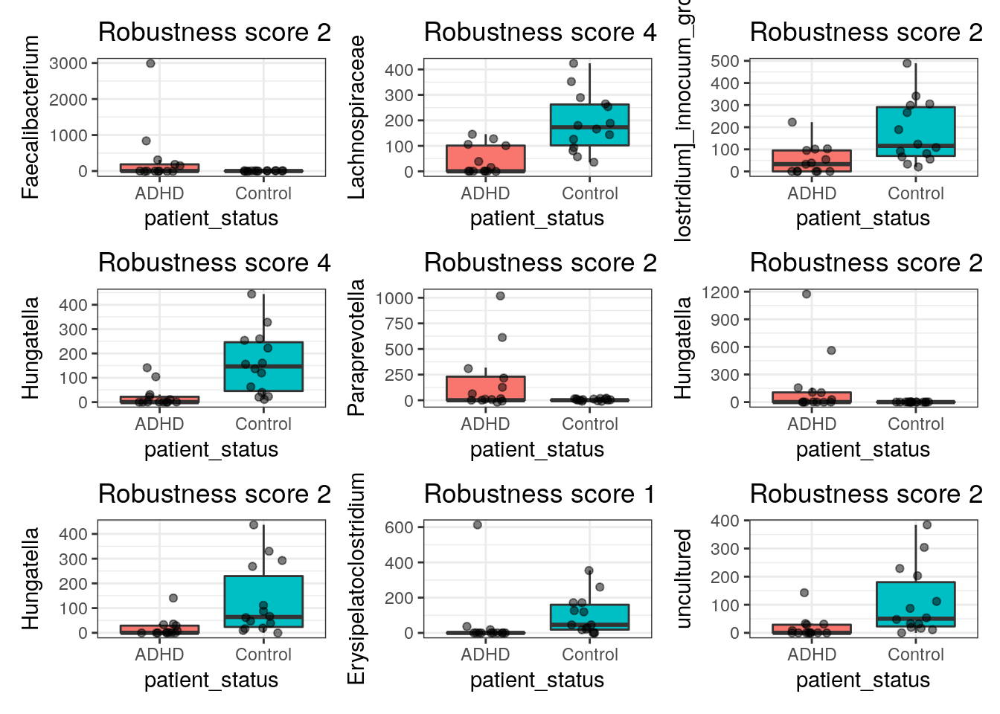

9 Differential abundance analysis demo
Here, we perform differential abundance analyses using four different methods: Aldex2, ANCOMBC, MaAsLin2 and LinDA. We will analyse Genus level abundances.
We recommend to first have a look at the DAA section of the OMA book. This will give you a little repetition of the introduction and leads you through an example analysis with a different data set and more explanations of the code. Simultaneously, you may want to perform the same analysis on the dataset we have worked with so far. You can double check the steps below where we show how to perform the steps on our dataset.
Lets start with the prevalence filtering:
# note that some tools perform prevalence filtering themselves
# so that this step is unncessary depending on the tool used
tse <- subsetByPrevalentTaxa(tse, detection = 0, prevalence = 0.1)9.1 ALDEx2
# set seed to rule out different results from randomness
set.seed(1)
# Generate Monte Carlo samples of the Dirichlet distribution for each sample.
# Convert each instance using the centered log-ratio transform.
# This is the input for all further analyses.
x <- aldex.clr(
reads = assay(tse),
conds = colData(tse)$patient_status,
# 128 recommened for ttest, 1000 for rigorous effect size calculation
mc.samples = 128,
denom = "all",
verbose = FALSE
)## operating in serial mode## computing center with all features# calculates expected values of the Welch's t-test and Wilcoxon rank test on
# the data returned by aldex.clr
x_tt <- aldex.ttest(
x,
paired.test = FALSE,
verbose = FALSE)
# determines the median clr abundance of the feature in all samples and in
# groups, the median difference between the two groups, the median variation
# within each group and the effect size, which is the median of the ratio
# of the between group difference and the larger of the variance within groups
x_effect <- aldex.effect(x, CI = TRUE, verbose = FALSE)
# combine all outputs
aldex_out <- data.frame(x_tt, x_effect)par(mfrow = c(1, 2))
aldex.plot(
aldex_out,
type = "MA",
test = "welch",
xlab = "Log-ratio abundance",
ylab = "Difference",
cutoff = 0.05
)
aldex.plot(
aldex_out,
type = "MW",
test = "welch",
xlab = "Dispersion",
ylab = "Difference",
cutoff = 0.05
)
9.2 ANCOM-BC
In case you get an error when running the function below, you may need to install the newest version of ANCOMBC (released a few days ago) by running the following line of code:
# library(devtools)
# install_github("FrederickHuangLin/ANCOMBC", ref = "develop")# perform the analysis
out = ancombc(
x = tse,
formula = "patient_status",
p_adj_method = "fdr",
prv_cut = 0, # no prev filtering necessary anymore
lib_cut = 0,
group = "patient_status",
struc_zero = TRUE,
neg_lb = TRUE,
tol = 1e-5,
max_iter = 100,
conserve = TRUE,
alpha = 0.05,
global = TRUE
)
# store the results in res
res <- out$res9.3 MaAsLin2
# first we rarefy data to stick to Nearing et al 2022
tse <- subsampleCounts(
tse,
abund_values = "counts",
min_size = min(colSums2(assay(tse))),
seed = runif(1, 0, .Machine$integer.max),
replace = TRUE,
name = "subsampled",
verbose = TRUE
)## Warning: Subsampling/Rarefying may undermine downstream analyses and have
## unintended consequences. Therefore, make sure this normalization is appropriate
## for your data.## `set.seed(1347512162.87252)` was used to initialize repeatable random subsampling.
## Please record this for your records so others can reproduce.## 0 features removed because they are not present in all samples after subsampling.# maaslin expects features as columns and samples as rows
# for both the asv/otu table as well as meta data
asv <- t(assay(tse, "subsampled"))
meta_data <- data.frame(colData(tse))
# you can specifiy different GLMs/normalizations/transforms. We used similar
# settings as in Nearing et al. (2021) here:
fit_data <- Maaslin2(
asv,
meta_data,
# A folder will be created that is called like the below specified output.
# It contains also figures to visualize the difference between genera
# for the significant ones.
output = "DAA example",
transform = "AST",
fixed_effects = "patient_status",
# random_effects = c(...), # you can also fit MLM by specifying random effects
# specifying a ref is especially important if you have more than 2 levels
reference = "patient_status,Control",
normalization = "TSS",
standardize = FALSE,
min_prevalence = 0 # prev filterin already done
)## Warning in xtfrm.data.frame(x): cannot xtfrm data frames# which genera are identified as differentially abundant? (leave out "head" to
# see all)
kable(head(filter(fit_data$results, qval <= 0.05)))| feature | metadata | value | coef | stderr | pval | name | qval | N | N.not.zero |
|---|---|---|---|---|---|---|---|---|---|
| X17264718 | patient_status | Control | 0.0728128 | 0.0125076 | 0.0000045 | patient_statusControl | 0.0006841 | 27 | 20 |
| X172647170 | patient_status | Control | 0.0675534 | 0.0147170 | 0.0001078 | patient_statusControl | 0.0081392 | 27 | 18 |
9.4 Summary of methods
summ <- full_join(
rownames_to_column(aldex_out, "genus") %>%
select(genus, aldex2 = wi.eBH),
rownames_to_column(out$res$diff_abn, "genus") %>%
select(genus, ancombc = patient_statusControl),
by = "genus") %>%
full_join(
select(fit_data$results, genus = feature, maaslin2 = qval) %>%
mutate(genus = str_remove(genus, "X")),
by = "genus") %>%
full_join(
select(
rownames_to_column(res$output$patient_statusControl, "genus"),
genus, linda = reject),
by = "genus") %>%
mutate(
across(c(aldex2, maaslin2), ~ .x <= 0.05),
# the following line would be necessary without prevalence filtering
# as some methods output NA
#across(-genus, function(x) ifelse(is.na(x), FALSE, x)),
score = rowSums(across(c(aldex2, ancombc, maaslin2, linda)))
)
# This is how it looks like:
kable(head(arrange(summ, desc(score))))| genus | aldex2 | ancombc | maaslin2 | linda | score |
|---|---|---|---|---|---|
| 17264718 | TRUE | TRUE | TRUE | TRUE | 4 |
| 172647170 | TRUE | TRUE | TRUE | TRUE | 4 |
| 17264734 | FALSE | TRUE | FALSE | TRUE | 2 |
| 1726479 | FALSE | TRUE | FALSE | TRUE | 2 |
| 17264728 | FALSE | TRUE | FALSE | TRUE | 2 |
| 17264733 | FALSE | TRUE | FALSE | TRUE | 2 |
Now we can answer our questions:
# how many genera were identified by each method?
summarise(summ, across(where(is.logical), sum)) %>%
kable()| aldex2 | ancombc | maaslin2 | linda |
|---|---|---|---|
| 2 | 73 | 2 | 23 |
# which genera are identified by all methods?
filter(summ, score == 4) %>% kable()| genus | aldex2 | ancombc | maaslin2 | linda | score |
|---|---|---|---|---|---|
| 17264718 | TRUE | TRUE | TRUE | TRUE | 4 |
| 172647170 | TRUE | TRUE | TRUE | TRUE | 4 |
Lets create plots to vizualize differential abundance:
# to plot the highest phylogenetic taxon name
taxid_switch <- as.data.frame(rowData(tse)) %>%
rownames_to_column("taxid") %>%
mutate(genus = ifelse(Family == "", Class, ifelse(Genus == "", Family, Genus))) %>%
select(taxid, genus) %>%
column_to_rownames("taxid")
plot_data <- data.frame(t(assay(tse)))
plot_data$patient_status <- colData(tse)$patient_status
# create a plot for each genus where the score is indicated in the title
plots <- pmap(
select(summ, genus, score),
function(genus, score) {
taxon <- taxid_switch[genus, "genus"]
ggplot(plot_data, aes_string("patient_status", glue::glue("X{genus}"))) +
geom_boxplot(aes(fill = patient_status), outlier.shape = NA) +
geom_jitter(width = 0.2, alpha = 0.5) +
ggtitle(glue::glue("Robustness score {score}")) +
theme_bw() +
theme(legend.position = "none") +
ylab(taxon)
})
# now we can show only those genera that have at least score 4 (3, 2 or 1)
robust_plots <- plots[summ$score == 4]
# to display this nicely in the book we use patchwork here:
# (we show first 8)
robust_plots[[1]] +
robust_plots[[2]] 
# or if we have most trust in any specific method we can show genera that
# are differentially abundant according to that method and then look in the
# title how many methods also identified it (we only show first 9 here):
linda_plots <- plots[summ$linda]
linda_plots[[1]] + linda_plots[[2]] +
linda_plots[[3]] + linda_plots[[4]] +
linda_plots[[5]] + linda_plots[[6]] +
linda_plots[[7]] + linda_plots[[8]] +
linda_plots[[9]] +
plot_layout(ncol = 3)
9.5 Exercises
- Try to interpret above analyses.
- Do “Differential Abundance” from the exercises.